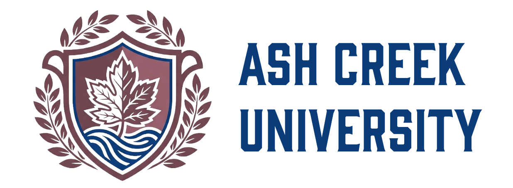

STAKEHOLDERCurrent stakeholder
WHAT HAPPENS NEXT
Because leadership rarely offers a clear path, you need a steady purpose. People around you have competing priorities, resources are limited, and even thoughtful decisions carry consequences you cannot foresee. This simulation is designed to help you develop your leadership skills.

At Ash Creek University, an uncertain XR initiative puts those tensions in your hands.
You report directly to the provost and lead a capable—but stretched—team supporting instructional design, faculty development, and emerging learning technologies.
Some consequences arrive later. Not all events are under your control. There is no leadership score.
WHERE THE INITIATIVE STANDS
THE TENSIONS YOU ENCOUNTERED
LEADERSHIP PRACTICE
Which consequence surprised you? Where did you exercise judgment, and where did circumstance make the decision for you? What would you change—knowing you can't know everything in advance?
This fictional case is inspired by recurring institutional challenges. Outcomes are possibilities, not predictions or assessments of leadership ability.